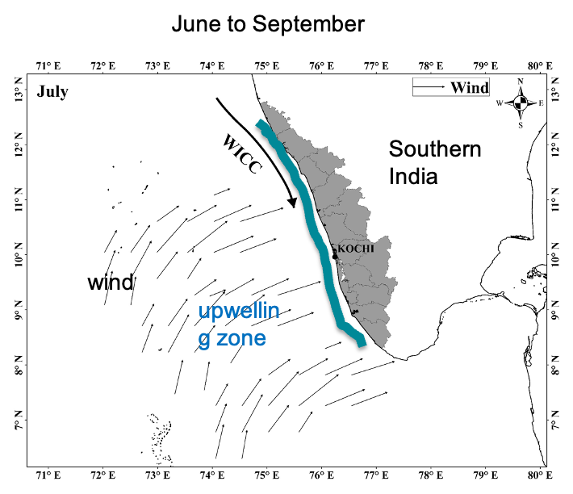
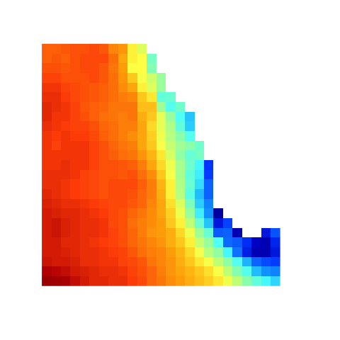
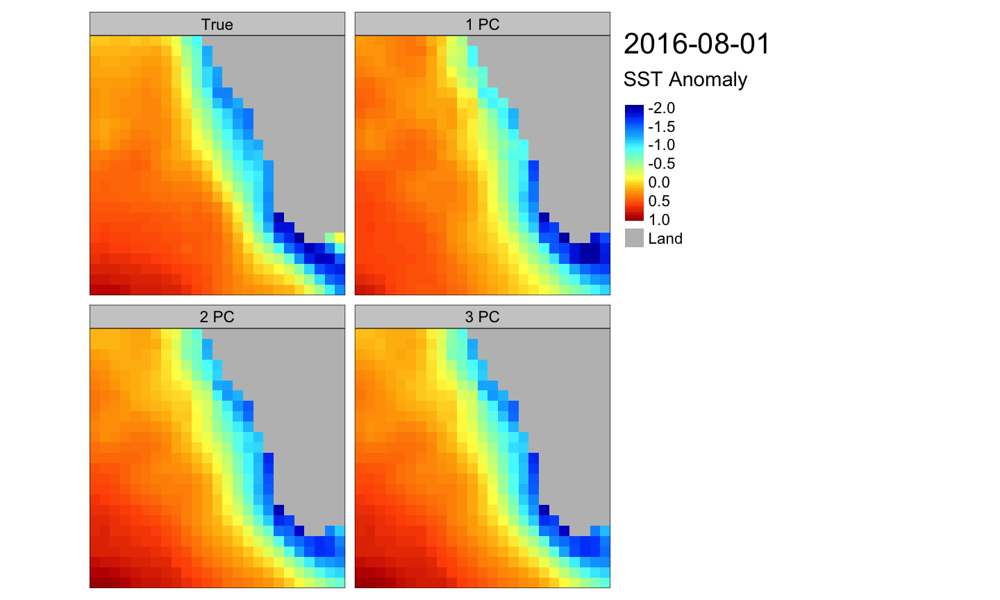
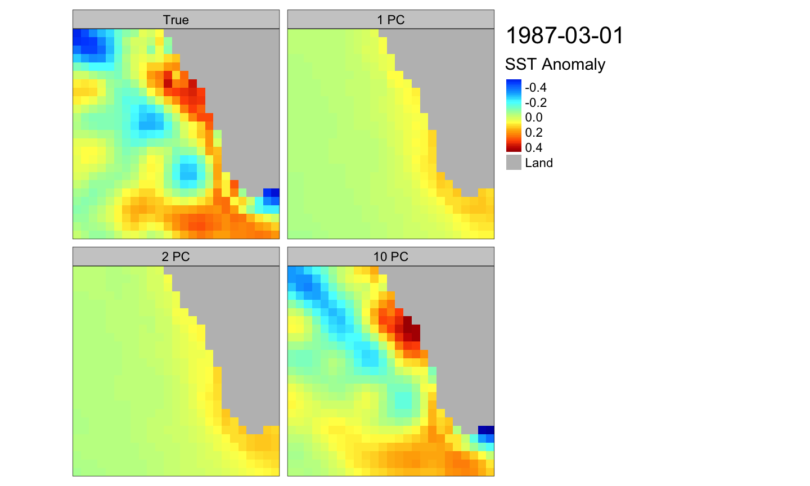
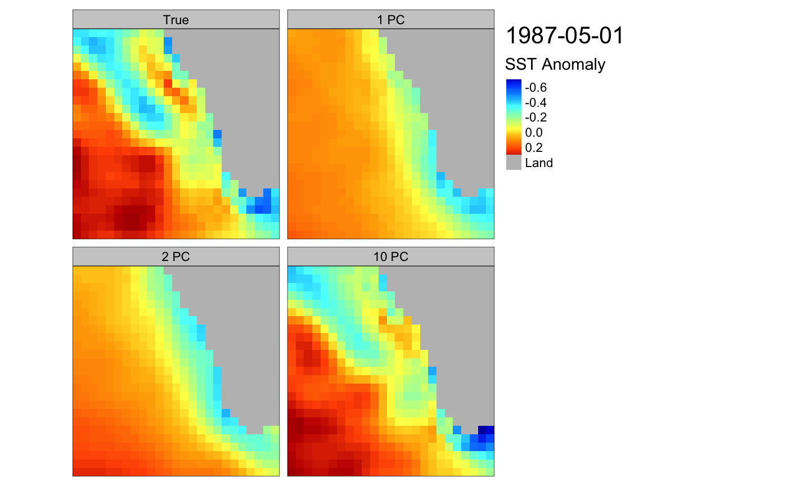
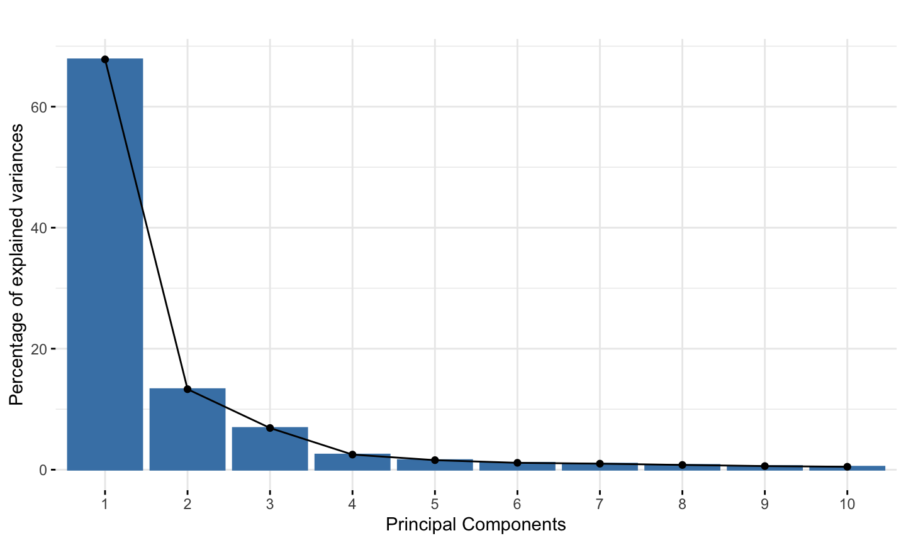
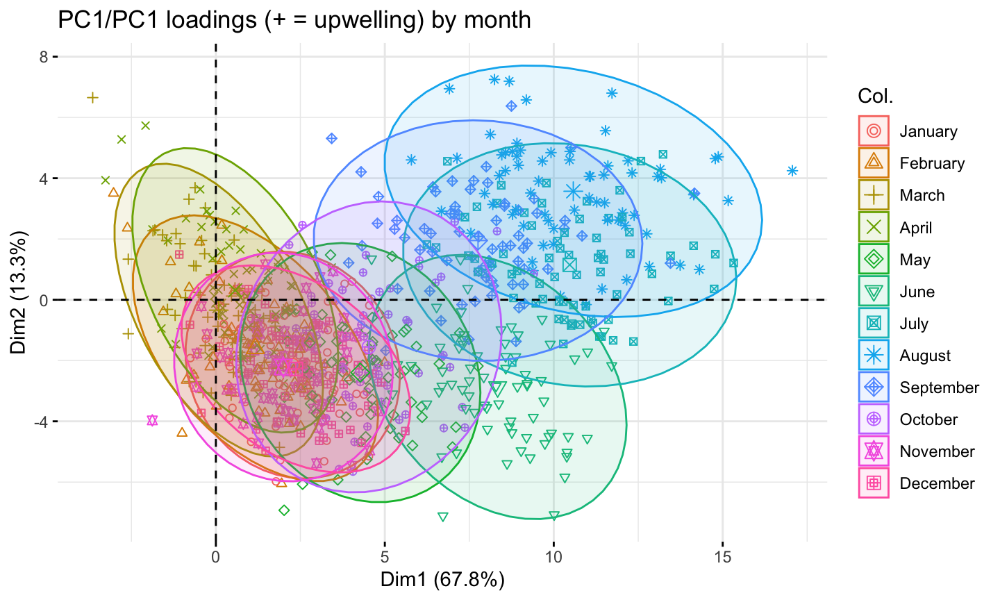
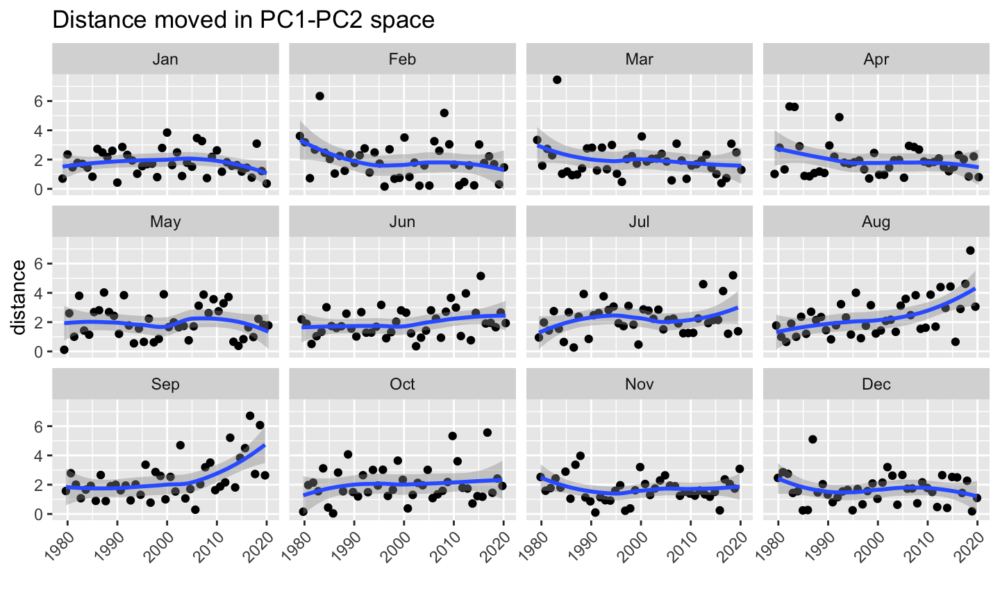
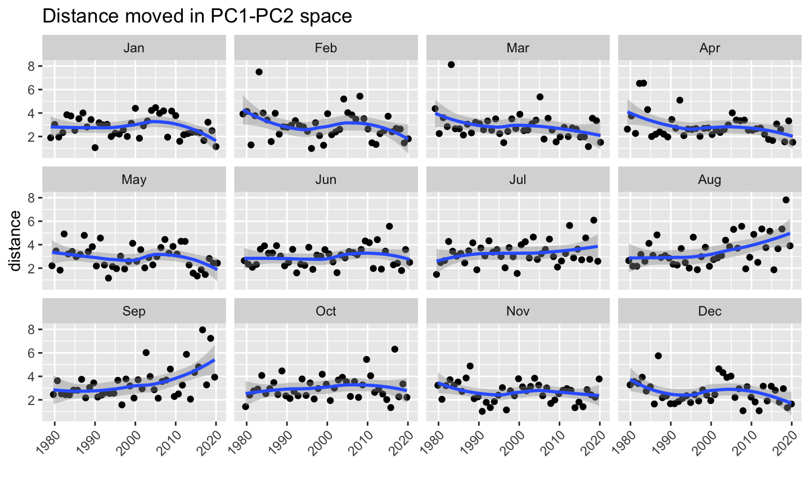
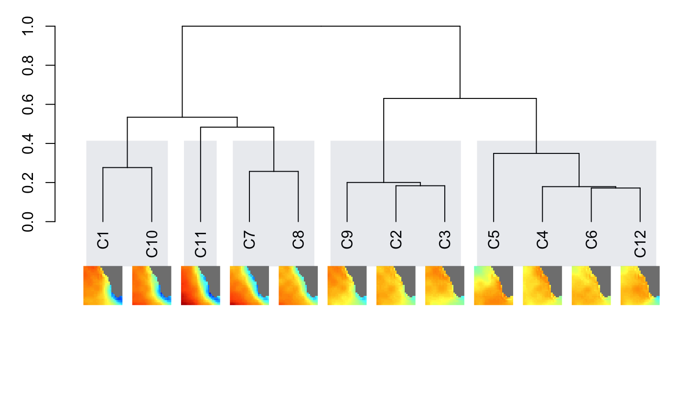

- Motivation for this study
- Upwelling patterns
- Common types of unsupervised image classification
- PCA
- K-means
- Hierarchical clustering
- Seasonal patterns of upwelling revealed by image classification
- Changes in upwelling in the SEAS
9 Apr 2021 SAFS Quantative Seminar
Topics
Why Southeast coast of India?
2014-2019 NOAA Fisheries/India Ministry of Earth Sciences joint research on improving forecasts of the indian oil sardine
- Hugely important fishery for India.
- India fishery produces 66–96% (average 80%) of the global oil sardine catch.
- Southeastern Arabian Sea (Kerala) produces the vast majority of that.
Improving forecasts using environmental covariates: a case study on the Indian oil sardine (Sardinella longiceps), May 24th, UW Fish and Wildlife Ecology Seminars.
Southeast Arabian Sea (SEAS) off the coast of Kerala state. ca 350 miles of coastline. Dispersed non-motorized and motorized fishery. Very productive fishing region for India.
Productivity in the SEAS is driven by seasonal upwelling
 Summer monsoon brings wind and rain
Summer monsoon brings wind and rain
 Strong upwelling starts from the tip and moves north
Coastal upwelling leads to a characteristic SST differential

- Nutrient rich water brought to the surface
- Phytoplankton blooms
- Sea surface temperature (SST) differential: Cold water along the coast and warm water off-shore
Coastal upwelling patterns are expected to change
Land warms faster than the ocean -> changes in coastal winds

Projected warming between 2015 and 2050
Di Lorenzo, E. 2015. The future of coastal ocean upwelling. Nature 518, 310–311.
Can we use unsupervised image classification of sea surface temperature (SST) to study upwelling patterns and changes to those patterns?
Why unsupervised classification?
- I am looking for change not a specific pattern
- I am looking for novel patterns because things are changing
- I worked with other upwelling metrics a lot and am looking for new approaches.


Today’s seminar
Three types of unsupervised image classification
- Principal Components Analysis (PCA) or Empirical Othogonal Factorization (EOF)
- K-means clustering
- Hierarchical clustering
Changes in the upwelling patterns in the SEAS
- As revealed by the image classification
- Changes to the pattern not absolute temperature
- Arabian Sea has warmed a lot in the past 2 decades. I have removed that by removing the mean from each image.
Working with images
- An image has \(p\) pixels
- Each row is an image. Each column is a pixel.
- Get rid of the NA (land) columns. No NAs allowed otherwise.
- Values are temperature with the mean temperature in that image subtracted. In some applications, you would standardize the variance to 1.
Here are 5 images and just the first 10 pixels of the image.
## p1 p2 p3 p4 p5 p6 p7 p8 p9 p10 ## 1979-01-01 0.11 0.01 -0.08 -0.13 -0.16 -0.15 -0.12 -0.07 -0.04 -0.03 ## 1979-02-01 0.19 0.10 0.03 0.00 0.02 0.08 0.12 0.15 0.16 0.15 ## 1979-03-01 0.14 0.07 0.04 0.04 0.10 0.18 0.27 0.33 0.34 0.30 ## 1979-04-01 0.14 0.09 0.04 0.01 0.02 0.05 0.09 0.11 0.08 0.03 ## 1979-05-01 0.01 -0.02 -0.06 -0.08 -0.09 -0.06 -0.03 -0.02 -0.03 -0.05
PCA (and EOF)
- Each image (a data set with \(p\) variables) can be expressed as the weighted sum of orthogonal images (i.e. independent).
- The vector is length \(p\) (number of pixels)
- The first vector captures most of the variance in the images.
Classic example is facial recognition: eigenfaces


PCA and EOF also used in oceanography
Pacific Decadal Oscillation index is an example. It is the weighting (\(\alpha\)) on the first \(\lambda\) from gridded SST anomalies in the North Pacific.
Let’s see how to do it
Let’s use prcomp in R. Using prcomp means you can use the visualization tools in R for PCA.
prcomp.pca <- prcomp(X_norm, scale = FALSE, center=FALSE)
- The \(\lambda\) are in
prcomp.pca$rotationwith each column an “eigen image”. - The \(\alpha\) are in
prcomp.pca$x. One for each image and each \(\lambda\).
Eigen images. Just first 10 pixels of the image are shown.
eigenimages <- t(prcomp.pca$rotation) round(eigenimages[1:5, 1:10], digits=2)
## p1 p2 p3 p4 p5 p6 p7 p8 p9 p10 ## PC1 0.06 0.06 0.05 0.05 0.04 0.04 0.04 0.04 0.04 0.03 ## PC2 -0.06 -0.06 -0.07 -0.07 -0.08 -0.08 -0.08 -0.07 -0.07 -0.07 ## PC3 0.02 0.01 0.00 -0.01 -0.02 -0.01 -0.01 0.00 0.01 0.01 ## PC4 -0.02 -0.02 -0.02 -0.02 -0.04 -0.05 -0.05 -0.06 -0.05 -0.04 ## PC5 0.00 0.01 0.02 0.02 0.03 0.03 0.03 0.03 0.03 0.04
# if image is say 25x25 library(raster) img <- as.raster(matrix(eigenimages[1,], byrow=TRUE, ncol=25)) plot(img)
Reconstructing the SST images
image = \(\alpha_1 \times\)  + \(\alpha_2 \times\)  + \(\alpha_3 \times\)
+ \(\alpha_3 \times\)  + \(\dots\)
+ \(\dots\)
August

March
May

Variance (in data set) explained

SST Anomaly pattern in the PC1-PC2 space

1980s versus 2010s

Sep and Aug seem to be changing

August images
Outlier identification
Use the first 10 dimensions.

March images
K-means clustering

Let’s try it
We need to choose the number of centers. I will start with 12 — big enough to capture most of the variability (which I discovered through trial and error).
set.seed(1221966) n_K <- 12 out_norm <- kmeans(X_norm, n_K, iter.max=25, nstart=100)
- The centroid images are in
out$centers. Each row is an image.
Distances between the images
Distance based on correlation.

Summer monsoon winds drive intense upwelling off the SW coast of India
* Wind and rain
* Strong upwelling starts from the tip and moves north